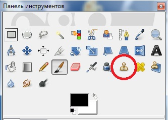

Штамп
Инструмент Штамп позволяет своеобразно копировать разные регионы изображения.

Параметры инструмента Штамп
Режим — способ смешивания штрихов с фоном,
Непрозрачность — степень непрозрачности накладываемых штрихов,
Кисть — форма кисти инструмента,
Масштаб — размер кисти инструмента, параметры динамики кисти, фиксированной длины штриха, дрожания.
Жесткие края — опция, позволяющая отменить какое-либо сглаживание формы штриха кисти. Если форма и так была жесткой, применение данной опции не даст каких-либо видимых результатов.
Источник — этот параметр позволяет задать объект дублирования: это либо само изображение, либо какая-то из уже знакомых нам текстура. Выбрав вариант Текстура, необходимо задать ее саму. При выборе текстуры в качестве объекта копирования задавать точку при помощи кнопки Ctrl уже не надо.
Выравнивание — параметр, позволяющий настроить поведение обоих курсоров по отношению друг к другу при использовании инструмента. Здесь можно выбрать один из следующих вариантов:
• Нет означает, что какого-либо выравнивания не будет. Используя этот режим, мы однажды указываем точку источника копирования (с помощью кнопки Ctrl), а затем, сколько бы раз мы ни начинали копирование и где бы на поверхности изображения это ни происходило, точка источника всегда останется там, где мы ее задали. Данный вариант удобен, например, когда мы дублируем один элемент в нескольких местах изображения;
• С выравниванием — режим, при котором точка-источник всегда смещается настолько, насколько смещается точка-цель. Например, однажды задав точку — источник дублирования, затем, применив инструмент, вы передвигаете курсор далеко в сторону и снова его применяете. В этом случае точка-источник также переместится, и будет дублирован уже другой элемент изображения;
• С регистрацией — режим, при котором изображение переносится не в стороны, а вверх-вниз по слоям, т. е. в данном режиме можно перенести изображение одного слоя на другой. Более подробно данную возможность мы рассмотрим в разделе Слои;
• Фиксированное — данный режим позволяет, однажды задав точку-источник, сделать в дальнейшем изображение в ней текстурой будущего мазка. Затем мы уже рисуем штампом как обыкновенной кистью, но вместо создания обыкновенных линий дублируем каждый раз изображение точки-источника.
Таким образом, с помощью инструмента Штамп можно выполнять множество разнообразных операций по переносу и дублированию отдельных элементов изображения самыми разнообразными способами.